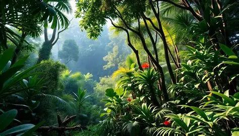

Características Principales
Las principales características de los ecosistemas terrestres son las siguientes:
- Se desarrollan sobre la superficie continental, en ambientes que no están cubiertos por cuerpos permanentes de agua.
- Están compuestos por las interacciones entre los organismos vivos (flora y fauna) y el entorno físico en el que se desarrollan.
- Sus características ecológicas dependen principalmente de elementos climáticos, como la temperatura y las precipitaciones.
- Existen distintos tipos: forestales, arbustivos, herbáceos, desérticos y artificiales.
- Albergan una amplia variedad de especies, que se adaptan a las condiciones específicas de cada hábitat.
- Cumplen funciones ecológicas clave, como la regulación del clima, la formación de suelo y el reciclaje de nutrientes.